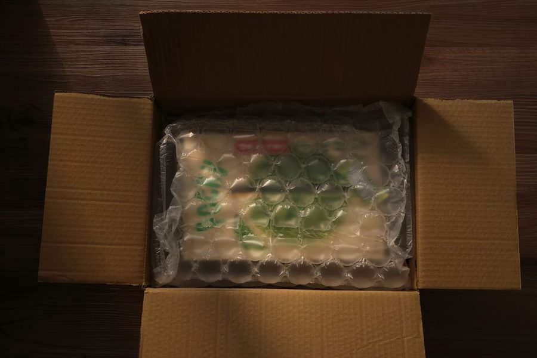

Início › Recebimento
Embalagem, avaria e o que fazer se o pacote chegar danificado

Um pacote percorre esteiras, é empilhado, viaja em veículos que freiam e sobe escadas no colo de alguém. A embalagem existe para absorver tudo isso. Quando ela falha, o problema chega até o produto — e o que você faz nos primeiros minutos do recebimento influencia bastante a solução.
Por que a embalagem tem a cara que tem
O papelão ondulado é o material padrão porque combina três qualidades difíceis de somar: é leve, absorve impacto e custa pouco. Dentro dele, o preenchimento — plástico com bolhas, papel amassado, espuma — não serve para "encher espaço", e sim para impedir que o item se mova. Objeto que balança dentro da caixa bate nas paredes a cada solavanco, e é assim que se quebram peças que resistiriam a uma queda.
As marcações impressas na caixa também têm função. Setas indicando o lado correto e avisos de conteúdo frágil orientam a estiva nas unidades de triagem. Elas não garantem tratamento especial, mas reduzem a chance de o volume ser posto de cabeça para baixo no fundo de uma pilha.
Os 30 segundos que valem mais que uma semana de e-mails
Ao receber, olhe a caixa antes de assinar qualquer comprovante. Procure por lados amassados, fita rompida e recolocada, manchas de umidade e som de peça solta ao inclinar levemente. Encontrando qualquer um desses sinais, você tem duas opções legítimas: recusar o recebimento, registrando o motivo com o entregador, ou aceitar e documentar imediatamente.
Aceitou e só depois viu o estrago
É a situação mais comum, porque nem sempre a avaria transparece por fora. Nesse caso, comunique a loja no mesmo dia, anexando as fotos e informando número do pedido e código de rastreamento. Guarde a embalagem original e todo o material de proteção: em muitas verificações internas, a transportadora pede exatamente isso para avaliar se a proteção era adequada. Descartar a caixa antes da resposta enfraquece o pedido sem necessidade.
Avaria não é arrependimento
Produto que chega danificado entra na categoria de vício do produto, com regras próprias — diferentes das do prazo de sete dias para desistir da compra por qualquer motivo. Na prática, o consumidor pode pedir a substituição, o abatimento do valor ou a devolução, conforme o caso e o prazo legal de reparo. Explicamos a diferença entre as duas situações no guia sobre o direito de arrependimento.
Como reduzir o risco antes mesmo de comprar
- Em itens frágeis, prefira lojas que descrevem como embalam — a informação costuma estar na página do produto ou nas avaliações.
- Leia comentários que mencionem o estado de chegada; é onde aparecem os problemas recorrentes de embalagem.
- Combine a entrega para um dia em que você (ou alguém de confiança) possa conferir o volume na hora.
- Evite deixar pacotes expostos à chuva em portarias e áreas externas por longos períodos.
Nada disso elimina o risco, mas transforma um eventual problema em um processo curto e documentado, em vez de uma discussão sem provas.